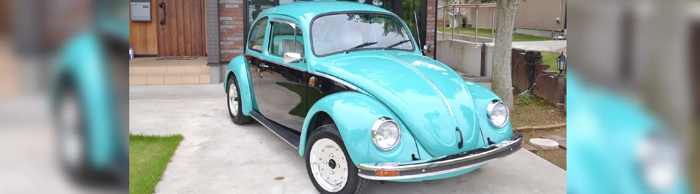
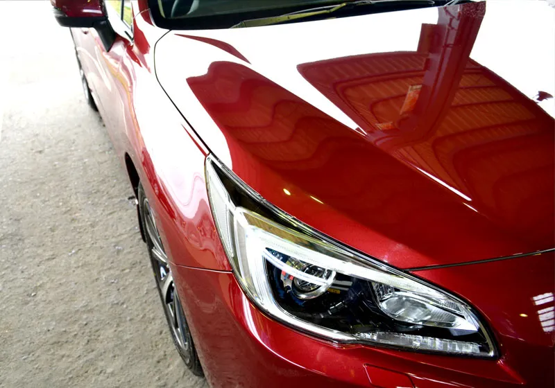
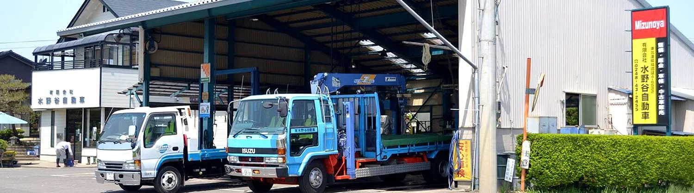

ABOUT US
矢吹のまちと、
クルマの安心を支えて。
私たちについて
1978年の創業以来、矢吹町に根ざし、
お客様一人ひとりのカーライフに寄り添ってきました。
確かな技術と誠実な対応で、
これからも地域の皆さまの安心・安全な毎日を支えます。
クルマは、毎日の暮らしを支える大切なパートナー。
私たちは、安心して長く乗っていただけるよう、
誠実な対応と確かな技術でサポートいたします。
小さなご相談から大きな整備まで、
どうぞお気軽にお声がけください。
サービス案内
-
 01車検・整備
01車検・整備国指定の認証工場（仙4-6522）。軽自動車から大型自動車まで法定車検・点検・故障診断。過剰整備をなくし、記録に基づく適切な整備をご提案します。
詳しく見る -
 02鈑金・塗装・ガラスリペア
02鈑金・塗装・ガラスリペア小さなキズ・ヘコミから事故による大きなダメージまで、丁寧に修復・調整します。ガラスリペアも承ります。
詳しく見る -

03中古車販売在庫一覧は設けず、全国各地のオークション会場のIDを取得。ご希望の車種・ご予算をうかがってお探しする相談窓口型です。
詳しく見る -

04ボディーコーティングVOCを含まない『スーパーガラスコーティング』で、洗練された輝きをいつまでも。防汚・簡単メンテナンスを実現します。
詳しく見る
選ばれる理由

- 創業 1978年
昭和53年の創業以来、矢吹町で地域の皆さまのカーライフを支えてきた実績と信頼。
- 国指定 認証工場
仙台陸運局 認証番号 仙4-6522。確かな技術と丁寧な仕事で、安全・安心をお届けします。
- オールインワン
車検・整備から鈑金塗装、中古車、コーティングまで一貫対応。クルマのことなら何でもご相談ください。
- 安心のアフターサポート
ご購入後も末永くサポートいたします。車検・点検の時期もご案内します。
お客様の声
Googleに寄せられたクチコミをご覧いただけます。
ご利用いただいた方は、よろしければ感想をお寄せください。
※ クチコミはGoogleに掲載されているもので、当社が内容を編集することはできません。
ギャラリー

写真にカーソルを合わせる（スマホは指で触れる）と、流れが止まります。
アクセス・営業時間
〒969-0265
福島県西白河郡矢吹町中畑南93-2
- TEL
- 0248-43-2455
- アクセス
- 東北自動車道 矢吹ICより車で10分
あぶくま高原道路 矢吹中央ICより車で5分 - 認証番号
- 仙台陸運局 仙4-6522
| 営業時間 | 月 | 火 | 水 | 木 | 金 | 土 | 日・祝 |
|---|---|---|---|---|---|---|---|
| 9:00 - 18:00 | ●営業 | ●営業 | ●営業 | ●営業 | ●営業 | ●営業 | 休業 |
※ 休業日：日曜・祝日
よくある質問
どんな車に対応していますか？
軽自動車から大型自動車まで対応しています。国指定の認証工場（仙台陸運局 認証番号 仙4-6522）として、法定車検・点検・故障診断を行います。
中古車の在庫はありますか？
在庫一覧は設けていません。全国各地のオークション会場のIDを取得しており、ご希望の車種・ご予算をうかがってお探しする相談窓口型です。
事故で大きく傷んだ車も修理できますか？
小さなキズ・ヘコミから事故による大きなダメージまで、丁寧に修復・調整します。ガラスリペアも承ります。
コーティング後のお手入れは大変ですか？
メンテナンスは水洗いだけで、再施工の必要はありません。汚れが落ちやすいため水の使用量も減り、節水に貢献します。
営業時間と休業日を教えてください。
営業時間は9:00〜18:00です。休業日は日曜・祝日です。
場所はどこですか？
福島県西白河郡矢吹町中畑南93-2です。東北自動車道 矢吹ICより車で10分、あぶくま高原道路 矢吹中央ICより車で5分です。